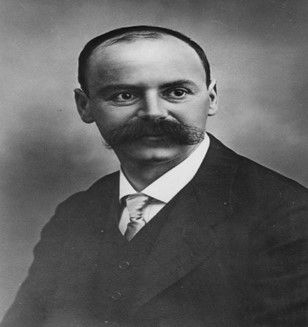

Introduction
Black Holes are among the most fascinating objects in our universe, and also the most mysterious .
A black hole is a region in the space where the force of gravity is so strong, not even light, the fastest known entity in our universe , can escape. The boundary of a black hole is called the event horizon, a point of no return, beyond which we truly cannot see, when something crosses the event horizon, it collapses into the black hole’s singularity, an infinitely small, infinitely dense point where space, time, and the laws of physics no longer apply .
Scientists have theorized several different types of black holes, with stellar and supermassive black holes being the most common.
Stellar black holes form when massive stars die and collapse , they’re roughly 10 to 20 times the mass of our sun, and scattered throughout the universe. There could be millions of these stellar black holes in the Milky Way alone.
Supermassive black holes are giants by comparison, measuring millions even billions of times, more massive than our sun, scientists can only guess how they form, but we do know they exist at the center of just about every large galaxy, including our own.
Sagittarius A, the supermassive black hole at the center of the Milky Way, has a mass of roughly four million suns, and has a diameter about the distance between the earth and our sun.
Black holes are invisible, so the only way for scientists to detect and study them is to observe their effect on nearby matter. This includes accretion disks, a disk of particules that form when gases and dust fall toward a black hole, and quasars, jets of particles that blast out of supermassive black holes .
Astronomers studying the constellation Cygnus discovered the first black hole. An untold number of black holes are scattered throughout the universe, constantly warping space and time, altering entire galaxies, and endlessly inspiring both scientists and our collective imagination.
General relativity:
If we want to understand clearly black holes we should first know something about the theory of general relativity published by Albert Einstein in 1915 !
The general idea of the general relativity is that the gravity is not considered as a strength, and sir Einstein wants to make a compatibility between the fact that there is no velocity bigger that the speed of light wish is a result of the remaining relativity a result published by the same scientist in 1905, and the theory of Newton.
He generalize the studies about the Galilean referential to the inertial frame of reference, and these studies need a very new Mathematical knowledge named curved geometry wish will represent the gravity and in wish we use metrics, one of these special tools is Schwarzschild metric that content as a parameters the distance and the mass that we can see in this picture :
And here the picture of the scientist
Schwarzschild provided the first exact solution to the Einstein field equations of general relativity, for the limited case of a single spherical non-rotating mass, which he accomplished in 1915, the same year that Einstein first introduced general relativity. The Schwarzschild solution, which makes use of Schwarzschild coordinates and the Schwarzschild metric, leads to a derivation of the Schwarzschild radius, which is the size of the event horizon of a non-rotating black hole.
The Schwarzschild radius (sometimes historically referred to as the gravitational radius) is a physical parameter that appears in the Schwarzschild solution to Einstein's field equations, corresponding to the radius defining the event horizon of a Schwarzschild black hole. It is a characteristic radius associated with any quantity of mass. The Schwarzschild radius was named after the German astronomer Karl Schwarzschild, who calculated this exact solution for the theory of general relativity in 1916.
The Schwarzschild radius is given as :

Now we have all the tools to start talking about a black hole. So if we want to define a black hole we can use what we have just exposed before (the radius of), a black hole is any object that is smaller than its Schwarzschild radius . We can also define Schwarzschild radius by the distance from the center of a black hole below which nothing can escape not even light .